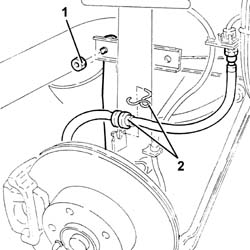
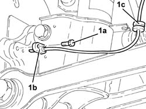
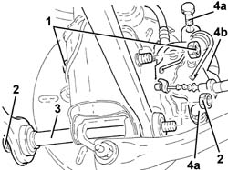
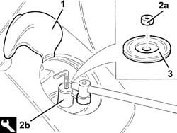
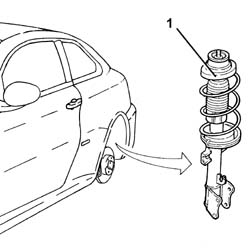
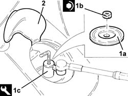
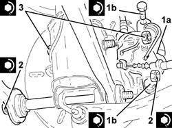
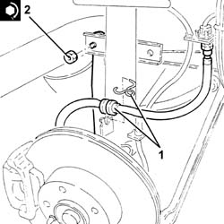

4420A10 L/H OR R/H REAR SUSPENSION SPRING/DAMPER UNIT (ONE) R+R
- Path
- Procedures > 44 SUSPENSION AND WHEELS > 4420 REAR SUSPENSION > 4420A REAR DAMPERS AND SPRINGS > 4420A10 L/H OR R/H REAR SUSPENSION SPRING/DAMPER UNIT (ONE) R+R
- Kind
- repair procedure (removal / refitting; the operation number is the code)
- Applies to
- all engines; all production periods
- Interactive page
- https://sloeber94.github.io/elrnDB-aGt/en/#/125001448
Applies to: all engines; all production periods
 Removing
Removing
 Refitting
RefittingPosition the vehicle on the ramp
Turn the ignition key to OFF position, then disconnect the battery negative terminal (-).
Name | Connector | |
|---|---|---|
- | Battery |
Proceed with removal
Op. 4450B11 TYRE INFLATION VALVE CAP - REPLACE
1. Undo the nut securing the rear suspension anti-roll bar joint to the damper.
2. Release the rear brake caliper flexible pipe from the fastener on the damper.

Applies to: all engines; all production periods
1. Undo the bolt (1a) and remove the rear wheel rpm sensor (1b) from its housing. Then release the electrical wiring from fasteners (1c) on the damper.

Applies to: all engines; all production periods
1. Undo the bolt securing the rear suspension shock absorber to the steering knuckle.
2. Undo the bolt securing the front and rear wishbones to the steering knuckle.
3. Recover the spacer.
4. Undo bolts (4a) and move rear brake caliper (4a) aside. Secure as necessary.

Applies to: all engines; all production periods
1. Working from the luggage compartment, raise the pre-cut trim and remove the access cap to the shock absorber dome.
2. Undo nut (2a) securing the damper to the body using tool (2b).
 | Name | Country |
|---|---|---|
2b | Key | 1.860.973.000 |
3. Recover the upper washer.

Applies to: all engines; all production periods
1. Working from the wheel compartment, remove the rear suspension spring/shock absorber assembly.

Applies to: all engines; all production periods
Refitting
RemovingRefit the rear suspension spring/shock absorber assembly.
1. Refit washer (1a) and tighten nut (1b) securing the damper to the body by tightening tool (1c) to the specified torque.
 | Fastening | Component | Ø | Value (daNm) |
|---|---|---|---|---|
1b | Nut | REAR DAMPER | M14 | (Bodyshell side 63 77 |
| Name | Country |
|---|---|---|
1c | Key | 1.860.973.000 |
2. Refit the access cap on the shock absorber dome and refit the trim.

Applies to: all engines; all production periods
1. Refit rear brake caliper (1a) and secure by tightening bolts (1b) to the specified torque.
| Fastening | Component | Ø | Value (daNm) |
|---|---|---|---|---|
1b | - | - | - | - |
2. Securing the front and rear wishbones to the steering knuckle by tightening the bolt to the specified torque.
| Fastening | Component | Ø | Value (daNm) |
|---|---|---|---|---|
2 | Bolt | REAR SUSPENSION./ FRONT. REAR. TRACK CONTROL ARMS. | M12 | (Rear wheel hub stub axle side.) 11.1 ÷ 13.5 |
3. Tighten the bottom securing the rear shock absorber to the steering knuckle to the specified torque.
| Fastening | Component | Ø | Value (daNm) |
|---|---|---|---|---|
3 | Nut | REAR DAMPER | M12 | (REar wheel stub axle side 111 135 |

Applies to: all engines; all production periods
Refit the rear wheel rpm sensor and bolt in place, then secure the electrical wiring using the fastenings on the damper.
1. Secure the rear brake pipe hose to the fastening on the shock absorber.
2. Tighten the nut securing the rear suspension anti-roll bar joint to the shock absorber.
| Fastening | Component | Ø | Value (daNm) |
|---|---|---|---|---|
2 | Nut | REAR ANTI-ROLL BAR PIVOTS | M10 | (Shock absorber side) 4.1 ÷ 5.0 |

Applies to: all engines; all production periods
Proceed with refitting
Op. 4450B11 TYRE INFLATION VALVE CAP - REPLACE.
Connect the negative (-) battery terminal
Remove the car from the ramps.
Proceed with refitting
Op. 4450A40 REAR WHEEL GEOMETRY - CHECK USING OPTICAL EQUIPMENT.
Topics linked from this page (3)
- 4450A40 REAR WHEEL GEOMETRY - CHECK USING OPTICAL EQUIPMENT
- 4450B11 TYRE INFLATION VALVE CAP - REPLACE
- A1B Battery ( BATTERY NEGATIVE )